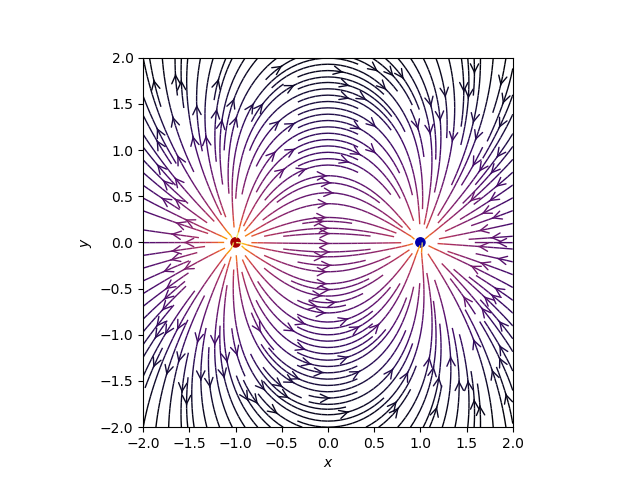
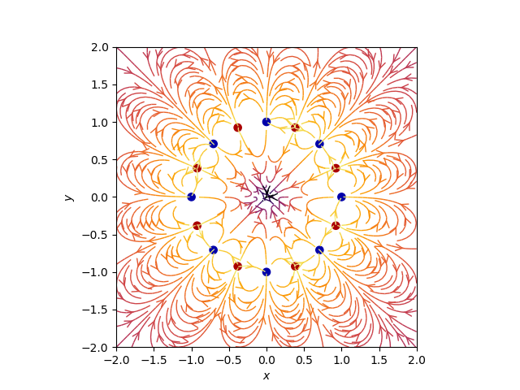
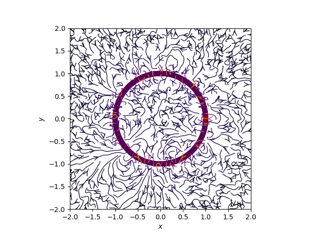

Este artículo se basa en un artículo en inglés del blog scipython, con nombre Visualizing a vector field with matplotlib.
Matplotlib provee una función llamada streamplot, para crear flujos que puede usarse para representar vectores de campo. El código python muestra la representación de un campo eléctrico a partir de multiples cargas. Las multiples cargas son seleccionadas como potencia de 2 (1 dipolo, 2 cuadrupolo, etc).
Se tiene una variable count la cual define la cantidad de cargas, en el primer caso vale 1 (dipolo).
A continuación el código:
#!/usr/bin/env python3
# coding: utf-8
# # Se importan los módulos necesarios para la graficación
import numpy as np
import matplotlib.pyplot as plt
from matplotlib.patches import Circle
# # Función que retorna el campo Eléctrico.
def E(q, r0, x, y):
"""Retorna el vector de campo eléctrico E=(Ex,Ey) de una carga q en r0"""
den = np.hypot(x-r0[0], y-r0[1])**3
return q * (x - r0[0]) / den, q * (y - r0[1]) / den
# # puntos de los ejes x e y.
nx, ny = 64, 64
x = np.linspace(-2, 2, nx)
y = np.linspace(-2, 2, ny)
X, Y = np.meshgrid(x, y)
# # Crear un multipolo con nq cargas
# count = número de q. En ese caso es 1 dipolo
count = 1
nq = 2**int(count)
charges = []
for i in range(nq):
q = i%2 * 2 - 1
charges.append((q, (np.cos(2*np.pi*i/nq), np.sin(2*np.pi*i/nq))))
# # Vector de campo eléctrico como componentes separados (Ex,Ey)
Ex, Ey = np.zeros((ny, nx)), np.zeros((ny, nx))
for charge in charges:
ex, ey = E(*charge, x=X, y=Y)
Ex += ex
Ey += ey
fig = plt.figure()
ax = fig.add_subplot(111)
# # Dibujar las líneas de flujo con mapa de colores y estilos apropiados.
color = 2 * np.log(np.hypot(Ex, Ey))
ax.streamplot(x, y, Ex, Ey, color=color, linewidth=1, cmap=plt.cm.inferno,
density=2, arrowstyle='->', arrowsize=1.5)
# # Agregar circulos para las cargas.
charge_colors = {True: '#aa0000', False: '#0000aa'}
for q, pos in charges:
ax.add_artist(Circle(pos, 0.05, color=charge_colors[q>0]))
# # Graficar
ax.set_xlabel('$x$')
ax.set_ylabel('$y$')
ax.set_xlim(-2,2)
ax.set_ylim(-2,2)
ax.set_aspect('equal')
plt.show()
Al ejecutar el código se tiene la siguiente gráfica:

La siguiente gráfica es con count con valor a 4, osea 8 polos:

Y la última gráfica es con count con 10, osea 20 polos:

El código python y el notebook de jupyter lo pueden obtener de un repositorio en github.
¡Haz tu donativo! Si te gustó el artículo puedes realizar un donativo con Bitcoin (BTC) usando la billetera digital de tu preferencia a la siguiente dirección: 17MtNybhdkA9GV3UNS6BTwPcuhjXoPrSzV
O Escaneando el código QR desde la billetera:

Comments !